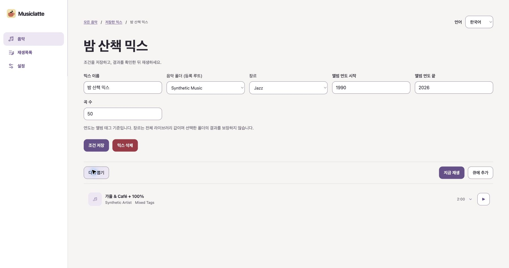
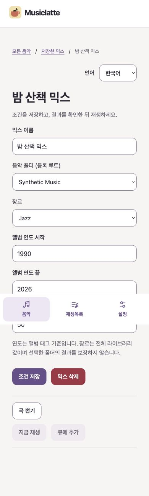
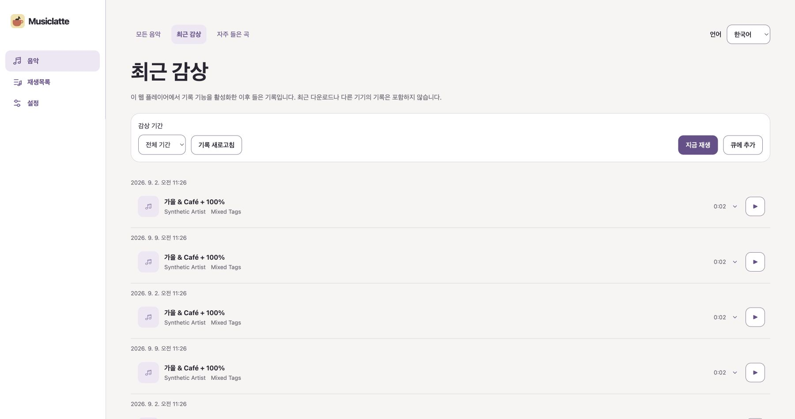
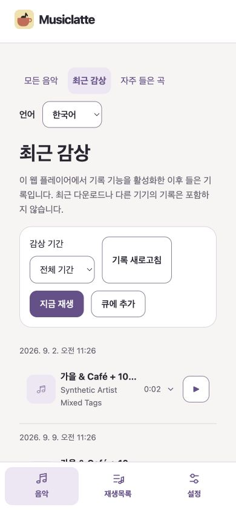
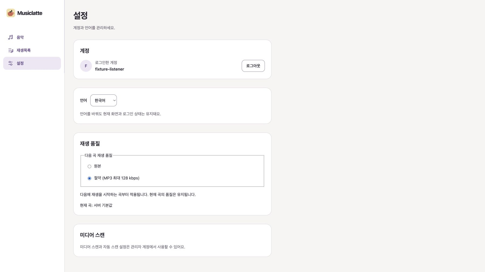
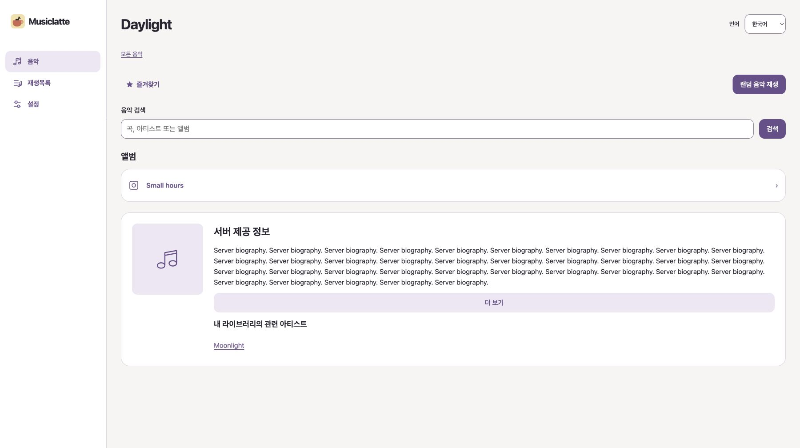
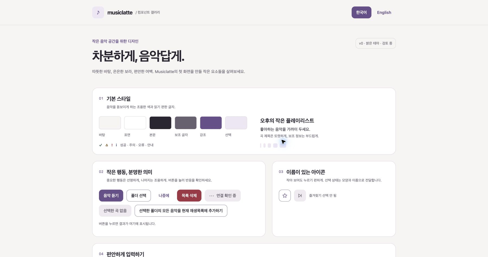

저장한 믹스 · 수정 후


‘모든 음악 / 저장한 믹스 / 현재 믹스’를 상단으로 이동하고 언어 선택을 우측에 맞췄습니다. 조건 저장은 primary, 믹스 삭제는 destructive, 다시 뽑기·큐 추가는 secondary로 구분했습니다. 중앙 68rem 제한도 제거했습니다.
P7-UA-001/005
실제 normal route와 합성 안전 fixture를 Chrome 1440×900, 390×844, 320px 및 실제 200% 확대에서 확인했습니다. 아래에는 승인된 방향의 대표 화면을 표시합니다.


‘모든 음악 / 저장한 믹스 / 현재 믹스’를 상단으로 이동하고 언어 선택을 우측에 맞췄습니다. 조건 저장은 primary, 믹스 삭제는 destructive, 다시 뽑기·큐 추가는 secondary로 구분했습니다. 중앙 68rem 제한도 제거했습니다.
P7-UA-001/005


‘모든 음악 / 최근 감상 / 자주 들은 곡’을 최상단 전환 영역으로 이동했습니다. 기간과 새로고침은 좌측 filter group, 지금 재생과 큐 추가는 우측 playback group으로 나누고 primary/secondary 위계를 적용했습니다. 320px 재배치도 별도로 확인했습니다.
P7-UA-002/005

다음 곡 선택 radio와 현재 곡의 effective 품질이 분리되어 보이는지 확인했습니다.
P7-UA-003/005

앨범 우선 위계, 긴 소개, 이미지 fallback, 더 보기와 관련 아티스트 이동을 확인했습니다.
P7-UA-004/005

2026-09-10 사용자 확인: 컴포넌트 Gallery 방향은 괜찮음. shared primitive 변경은 없습니다.